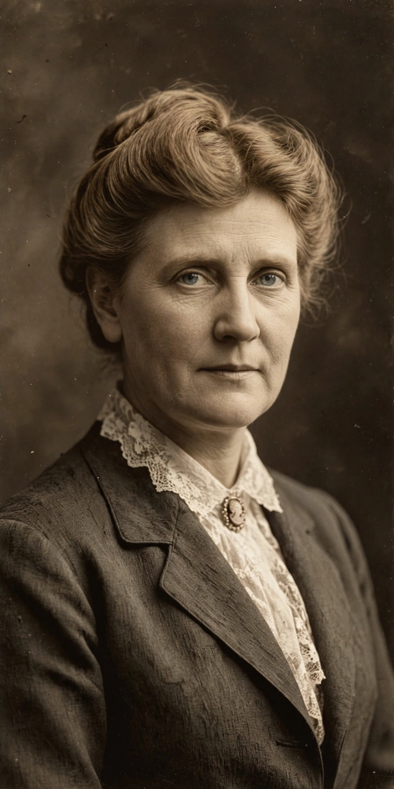

Mary White Ovington (April 11, 1865 – July 15, 1951) was an American suffragist, journalist and civil rights activist, best known as one of the founders of the National Association for the Advancement of Colored People (NAACP) in 1909. A white New Yorker from a Unitarian abolitionist family, she spent decades in settlement-house work and investigative reporting on the conditions of Black Americans before convening the meeting that led to the NAACP, in which she served for four decades as board member, executive secretary and chair of the board.
| Born | April 11, 1865, Brooklyn, New York |
|---|---|
| Died | July 15, 1951 (aged 86), Newton Highlands, Massachusetts |
| Occupation | Suffragist, journalist, civil rights activist |
| Known for | Co-founder of the NAACP (1909) |
| Education | Packer Collegiate Institute; Radcliffe College |
| Notable works | Half a Man (1911); The Walls Came Tumbling Down (1947) |

Ovington was born in Brooklyn to parents active in the Unitarian church and the abolitionist and women's rights movements. Educated at Packer Collegiate Institute and Radcliffe College, she became involved in the settlement house movement, helping to found the Greenpoint Settlement in Brooklyn in 1894. A fellowship from the Greenwich House settlement let her study Black life in Manhattan; from 1904 she published pioneering journalistic studies of housing, employment and education among Black New Yorkers, collected in Half a Man: The Status of the Negro in New York (1911).
Reading William English Walling's account of the 1908 Springfield race riot — in Abraham Lincoln's hometown — Ovington wrote to Walling, and with Walling and the socialist Henry Moskowitz she met in a New York apartment on 3 January 1909 to plan a national conference. The resulting "National Negro Conference" of May–June 1909 created the committee that became the NAACP in 1910. Ovington worked alongside W. E. B. Du Bois and others, serving as the association's executive secretary, treasurer, and chair of the board (her chairmanship came in the 1930s), and she chronicled the organisation's early years in The Walls Came Tumbling Down (1947).
Ovington wrote a children's book, The Upward Path (1919), an anthology of Black writing for young readers, and a biography of the Black banker and community Portraits in Color (1927). She retired from the NAACP board in 1947 and died in Massachusetts in 1951, having devoted over forty years to the cause she had helped to found.